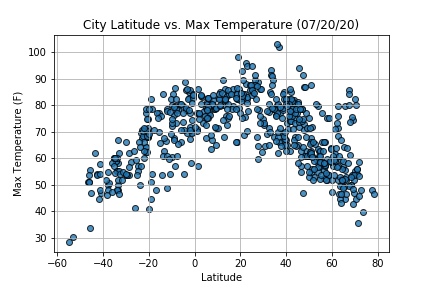
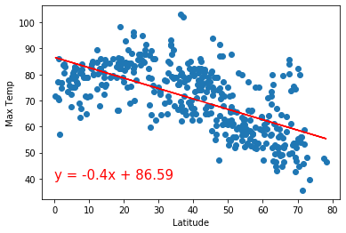
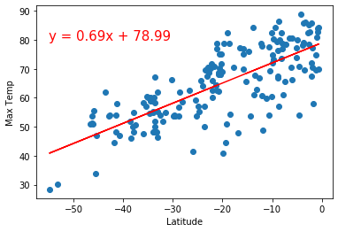

Max Temperature

As observed in the scatter plot, the maximum temperature of cities increases as they are located closer to the equator (0 Deg. Latitude). Interestingly, the cities with the highest maximum temperature are between 20 to 40 degrees latitude which could be attributed to the Earth's axis tilt in relation to the sun during the month of July, which is when the data was gathered from the OpenWeatherMap API.
Statistical Analysis
Northern Hemisphere
The calculated R-squared value is 0.4125 for cities located in the northern hemisphere. Thus, approximately 41.25% of the movements of temperature (dependent variable) are explained by movements in the latitude (independent variable).
Southern Hemisphere
The calculated R-squared value of 0.5644 represents how approximately 56.44% of the max temperatures in the southern hemisphere are explained by global position in regards to latitude.
Conclusion
Overall, the statistical analysis demonstrates how both of the hemispheres display a moderately positive correlation between max temperature and latitude.